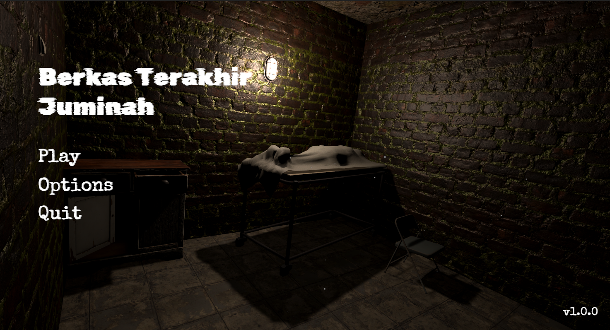
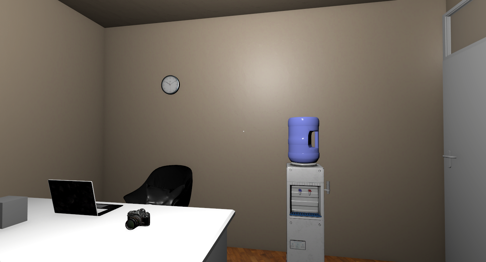
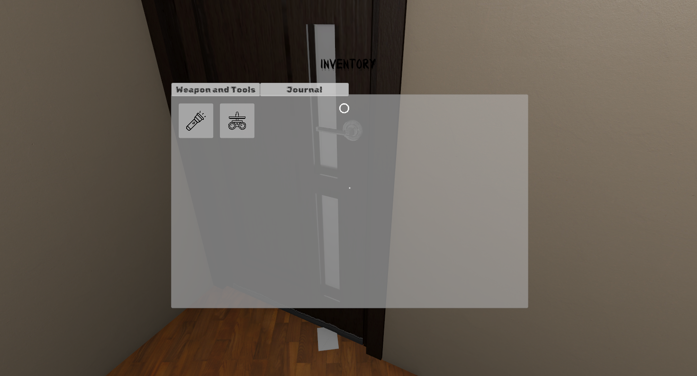
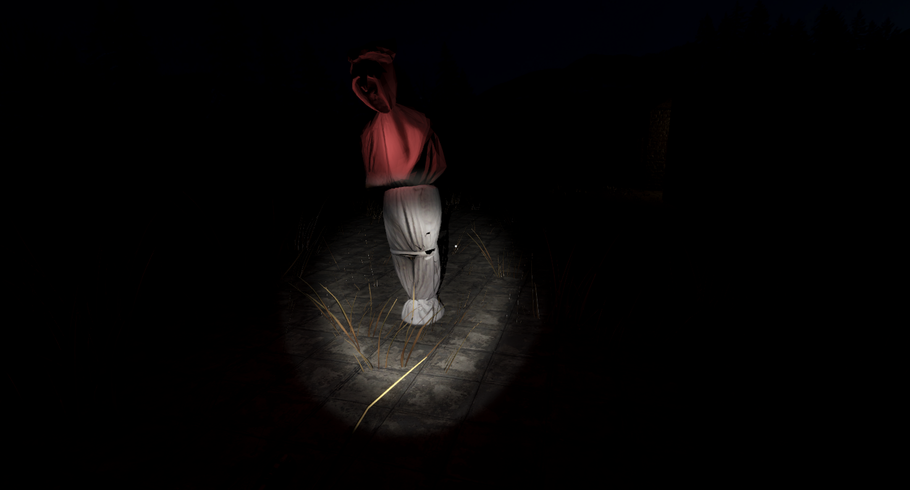
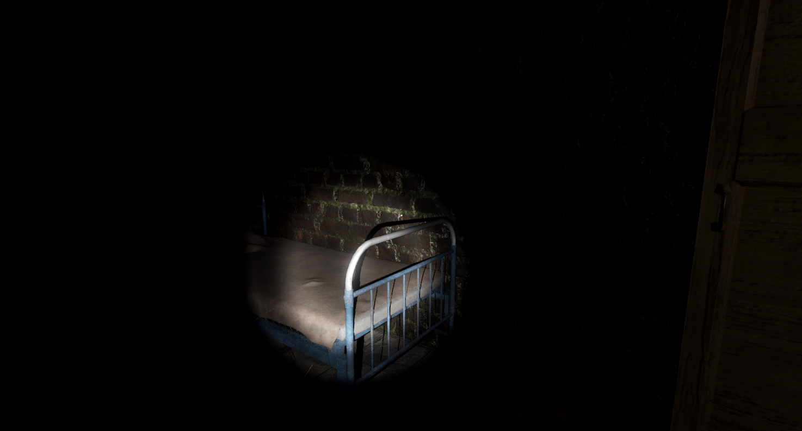
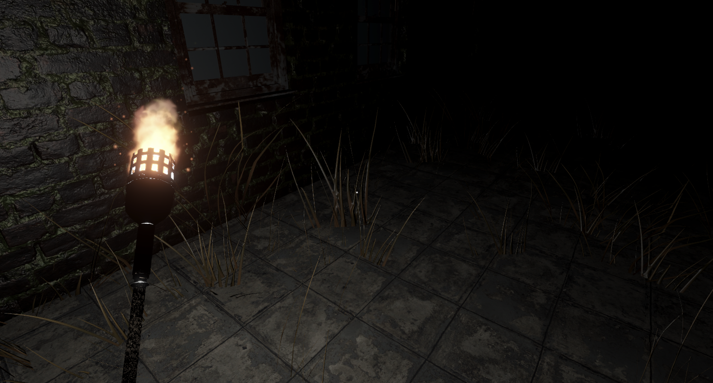
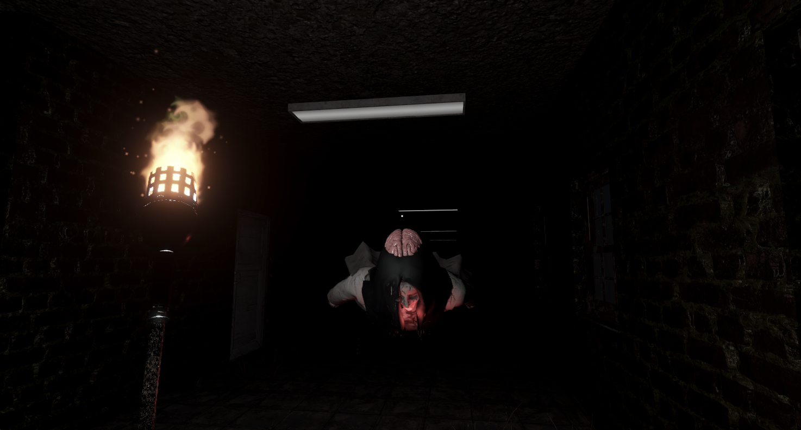

Berkas Terakhir Juminah
Uncover the truth behind the last records of Juminah.
Berkas Terakhir Juminah is a first-person survival horror game about Arga, a journalist investigating a mysterious case surrounding Juminah, a woman whose final medical records may reveal a truth that someone desperately wants to remain hidden.
Explore a dark and abandoned hospital, investigate forgotten rooms, discover hidden documents, and uncover the story buried within Juminah’s final records.
But be careful.
Something is still inside the hospital.
🎮 Key Features
-
First-Person Survival Horror:
Experience a tense first-person horror adventure where darkness, sound, and the unknown become your greatest threats. -
Explore a Forgotten Hospital:
Search through hospital corridors, wards, morgues, basements, and other unsettling locations to uncover clues about what happened to Juminah. -
Investigate the Evidence:
Discover documents, medical records, notes, and other pieces of evidence that gradually reveal the truth behind the case. -
Supernatural Encounters:
Face terrifying supernatural entities inspired by Indonesian folklore. You cannot simply fight your way through them — survival requires understanding their weaknesses. -
Limited Tools & Resources:
Use tools and special items to survive encounters with the entities lurking inside the hospital. -
Immersive Horror Atmosphere:
Experience oppressive darkness, environmental details, unsettling sounds, and dynamic encounters designed to keep you constantly on edge. -
Night Vision:
When the flashlight is no longer enough, use Night Vision to see through the darkness — but remember that seeing something does not necessarily mean you are safe.
👻 The Entities
The hospital is not empty.
Throughout your investigation, you may encounter supernatural entities connected to the events surrounding Juminah.
Each entity has its own behavior, weaknesses, and way of hunting the player.
You are not the hunter.
You are trying to survive.
📖 The Story
In 2005, a young pregnant woman named Juminah becomes involved in a mysterious incident at a hospital in Banyumas.
Years later, journalist Arga begins investigating the case.
Something doesn’t add up.
Medical records are missing.
Important information has been hidden.
And somewhere inside the hospital lies the last file of Juminah.
Finding it may reveal what really happened.
But the deeper Arga goes, the more he realizes that some secrets were never meant to be uncovered.
📸 Preview & Screenshots







🎬 Development
Berkas Terakhir Juminah is an independent horror game currently being developed by Wuriyanto.
The project focuses on creating a detailed and atmospheric survival horror experience inspired by Indonesian folklore, abandoned places, and stories surrounding hidden truths.
The game is currently in development.
📩 Support & Contact
Found a bug, have feedback, or want to follow the development of the game?
Feel free to reach out:
-
Email: wuriyanto007@gmail.com
-
Website: wuriyan.to
© 2026 Wuriyanto. All rights reserved.